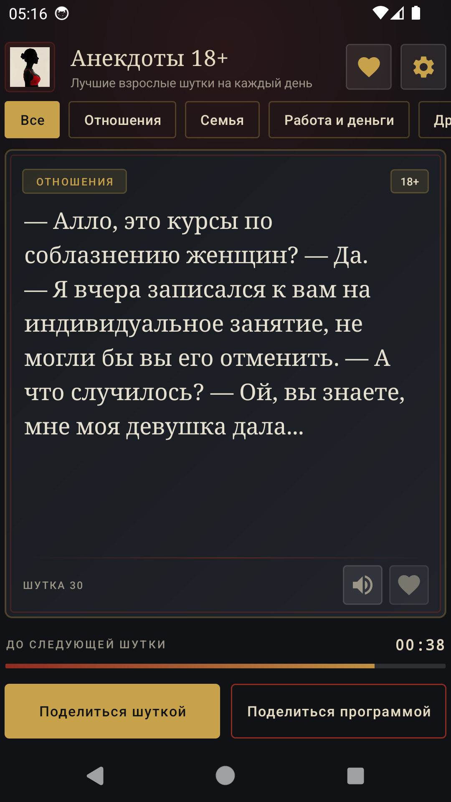
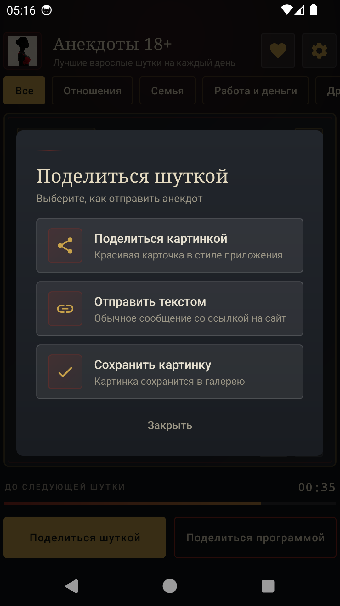
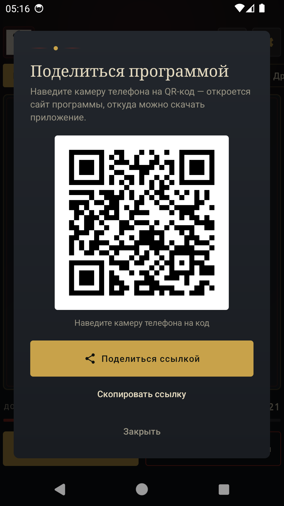
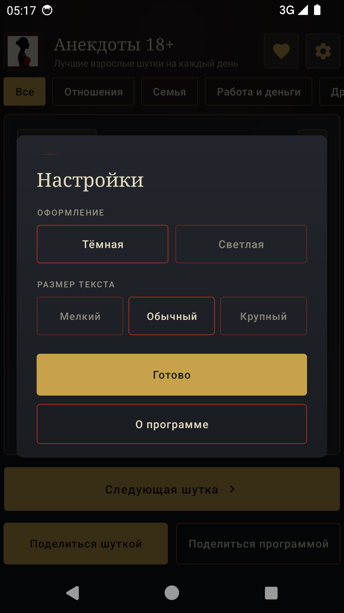
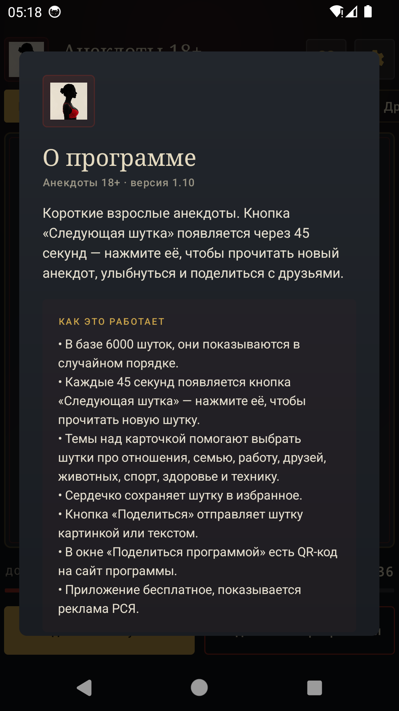

«Анекдоты 18+» — 6000 коротких взрослых анекдотов, собранных из открытого архива anekdot.ru за 2022–2024 годы. Девять тем, таймер на 30 секунд, избранное, озвучка и карточки-картинки для мессенджеров. Без регистрации, без интернета, без лишних настроек.
- Есть в RuStore
- Android 8.0 и новее
- Версия 1.16
- ≈9,5 МБ
- Работает офлайн
- 18+
Приложение опубликовано в RuStore: карточка приложения. История версий и APK прошлых сборок — в разделе релизов.
Как это работает
Шутка каждые 30 секунд
Анекдот показывается на экране, а через 30 секунд появляется кнопка «Следующая шутка». Можно читать не спеша — таймер подскажет, когда ждать новую.
Девять тем
Отношения, семья, работа и деньги, друзья, животные, спорт, здоровье, техника и прочее — выберите настроение в строке тем над карточкой. Для каждой темы свой порядок, повторов нет.
Избранное
Сердечко на карточке сохраняет шутку. Потом её можно перечитать, отправить другу или убрать из списка — всё хранится только на устройстве.
Озвучка шутки
Кнопка с динамиком читает анекдот вслух системным синтезатором речи. Работает офлайн и пригодится, когда глаза заняты.
Поделиться картинкой
Шутка превращается в карточку в стиле приложения — её удобно отправить в мессенджер или сохранить в галерею. Есть и отправка обычным текстом со ссылкой.
Тёмная и светлая тема
Оформление и размер текста выбираются в настройках — удобно и днём, и вечером.
Никаких повторов
Шутки выдаются из перемешанной колоды: пока не закончится вся тема, одна и та же шутка не вернётся.
QR-код для установки
В окне «Поделиться программой» есть крупный QR-код на этот сайт. Другой телефон наводит камеру — и скачивает приложение.
Без регистрации и офлайн
Не нужно создавать аккаунт, указывать имя, телефон или почту. Все шутки уже внутри приложения: читать можно в дороге и там, где нет сети.
Экраны приложения





Важно знать
- Приложение содержит взрослый юмор и имеет возрастную маркировку 18+. Не для детей.
- Установить приложение можно из RuStore или напрямую APK-файлом с этого сайта — версии одинаковые и подписаны одним ключом.
- Приложение не запрашивает аккаунт, не собирает и не хранит персональные данные.
- Избранное, настройки и счётчик прочитанных шуток хранятся только на вашем устройстве.
- Внизу экрана показывается реклама Рекламной сети Яндекса (РСЯ) — единственный источник финансирования бесплатного приложения.
- Все шутки находятся внутри приложения — интернет нужен только для загрузки рекламы.
- Шутки взяты из открытого архива anekdot.ru (2022–2024). Права на конкретные тексты принадлежат их авторам; по запросу правообладателя материал удаляется из базы.